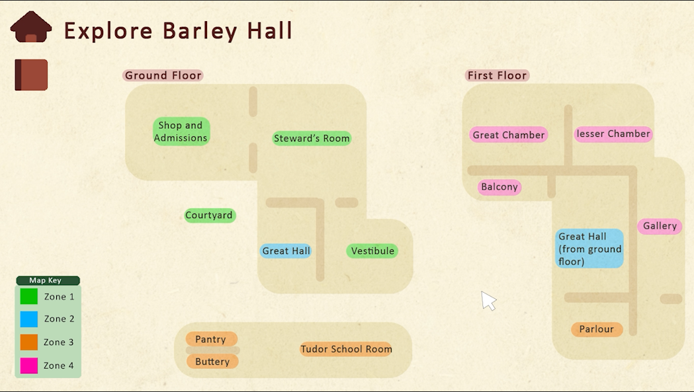
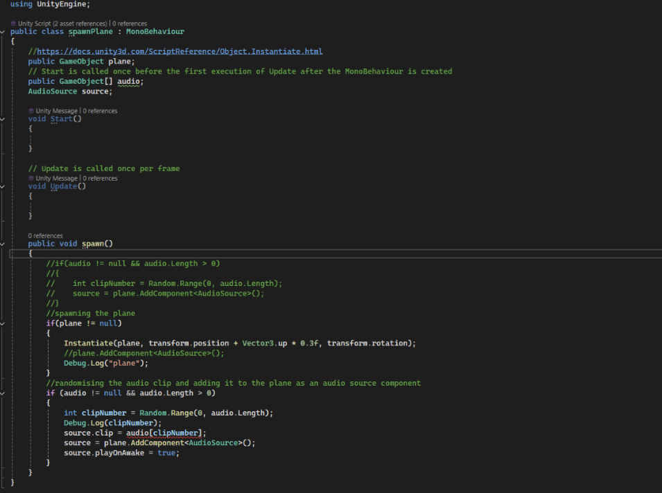

Barley Hall - Volunteer Training Website
A high fidelity prototype created to present alternate training methods for prospective volunteers at the Barley Hall historic site in York, England.

Project Overview
As part of the User Experience Design module, we were tasked with creating a form of interactive media in response to a brief from York Archeology’s Barley Hall attraction. The brief asked we create a more engaging digital training resource for potential volunteers. My concept was a website that showed a virtual rendition of the attraction, in which volunteers could explore a ‘click-through’ style environment, interacting with highlighted objects to gain more information about the hall.
The Technical Challenges & Solutions
Hurdle 1: User Engagement and Learning Retention
The Problem: Traditional training resources were analyzed and found to have clear gaps in keeping volunteers engaged and receptive to information. The digital alternative needed a way to motivate users to complete the training.
The Solution: The implementation of a real-time Tracking Progress mechanism. The solution features a tracking bar that updates dynamically as the volunteer interacts with objects, visually reminding them of their continued progress and gamifying the learning experience.
Hurdle 2: Navigation and Spatial Disorientation
The Problem: In virtual or click-through environments, users frequently experience spatial disorientation (getting "lost" when moving between different virtual rooms or panoramic views).
The Solution: The project defined a strict requirement for Spatial Consistency. The solution dictates that users will always "spawn" or land at a designated central point of every room on the virtual map. This standardizes the user's initial field of view and eliminates confusion when transitioning between different physical locations.
Asset Development Gallery
Swipe through the project assets. Hover over any card to reveal the technical logic, implementation details, and project necessity.

Fig 1. User Persona and Journey Map.

Fig 2. Low-Fidelity UI Wireframes.

Fig 3. High-Fidelity Prototype Interactive Mock-up.
UX Architecture & User Research
This project required multiple approaches to UX testing across different stages to provide a defined high fidelity prototype centerd to user needs.
1. Early Stage Attitudinal and Evaluative User Research
After analysing the current training resources and approaches used by market competitors, I developed a questionnaire to utilize preference testing and reveal feature prioritization. Users self-reported which features were most to least useful and were surveyed on their learning approaches and preferences. This revealed a preference for more automated logbook-like progress reflections as opposed to a manual self-reflective learning journal.
2. Mid-Stage Generative & Empathic Design
I synthesized the gathered data into foundational design tools to map out the system's flow. This included the creation of a persona, aligning a fictional achetype with relevant volunteer demographics and the user journey mapping which visualized how the persona will interact with the product overtime to pinpoint potential friction or success markers.
3. Later Stage Iterative Prototyping and Task-based Usability Testing
I translated insights into actionable designs by moving from structural wireframes to a functional, tested interactive prototype. This began with low-fidelity wireframing to breakdown the spatial navigation and transition between 2D and 3D visual information before developing an interactive prototype in Adobe XD with relevant but basic graphics. I conducted structured usability tests where users were provided with a set of instructions to prompt their navigation. This evaluated their confidence wihtin core tasks and was recorded in a self-reported evaluation of the participant's progress.
Reflection & Further Development
An honest evaluation reveals the technical hurdles and design limits of the current prototype alongside a roadmap to fully realize our project aims.
The Reality Check: My interactive prototype successfully validated the spatial layouts of Barley Hall using Adobe XD, establishing intuitive navigation boundaries and clear user paths. I wired interactive hotspots onto key historical room artifacts to simulate active exploration, proving that a virtual format can effectively replicate the curated guest experience. I successfully mapped out the logic for the automated logbook, demonstrating how progress metrics can be compiled and redisplayed instantly without forcing users into tedious, manual data entry.
Further Development: To move this system toward a full production launch, future developments must focus on elevating visual immersion by replacing placeholder graphics with high-definition 360° panoramas or 3D environmental photogrammetry. Additionally, the backend architecture for the automated Q&A feature needs to be engineered, securely linking the chat window to a closed dataset built on local historical archives. Finally, the next iteration will integrate comprehensive web accessibility improvements, including full keyboard tab controls for spatial navigation, screen-reader compatibility for interactive hotspots, and WCAG-compliant styling to support all incoming volunteer demographics.
The Reality Check: The current Adobe XD prototype successfully bridges the gap between volunteers and visitors by embedding the trainee directly into the guest journey. By forcing the user to navigate the virtual space exactly as a member of the public would, the design establishes immediate contextual awareness of how visitors absorb information and move through the site. This perspective shift successfully validates my design goal: training volunteers through a lens of active empathy, transforming them from passive readers of a guide into active participants who intimately understand the guest experience.
Further Development: To deepen this empathetic training model in future iterations, the platform will require features that simulate real-world visitor dynamics and unpredictable guest behaviors. Later updates should integrate scenario-based training modules, such as mock guest interactions, a wider variety of specialized visitor user journeys, and adjustable situational settings (e.g., peak crowd hours or school group tours). This progression will move the tool from a baseline spatial orientation into a robust behavioral training simulator, ensuring volunteers are fully equipped to confidently manage, support, and elevate the real-world guest experience.
The Reality Check: The interactive prototype successfully dismantles the passive, text-heavy nature of traditional training resources by replacing rigid PDFs with an active learning environment. Through the integration of automated progress logs and a clickable user flow, the current design proves that users can absorb necessary role-specific facts organically as they interact with the space. The interface provides a functional proof-of-concept for instant feedback loops, successfully establishing that immediate data reflection keeps users highly engaged, focused, and in control of their self-guided learning pace.
Further Development: To fully realize this high-interaction learning environment in a live production release, the underlying backend technology must be fully engineered. The next major technical milestone requires implementing the closed-dataset AI engine to transform the simulated Q&A window into a fully operational, responsive dialogue tool. Additionally, future iterations should expand the automated journal into a gamified dashboard, introducing interactive milestone achievements, knowledge check challenges, and dynamic learning streaks to further solidify fact retention and sustain long-term volunteer engagement.